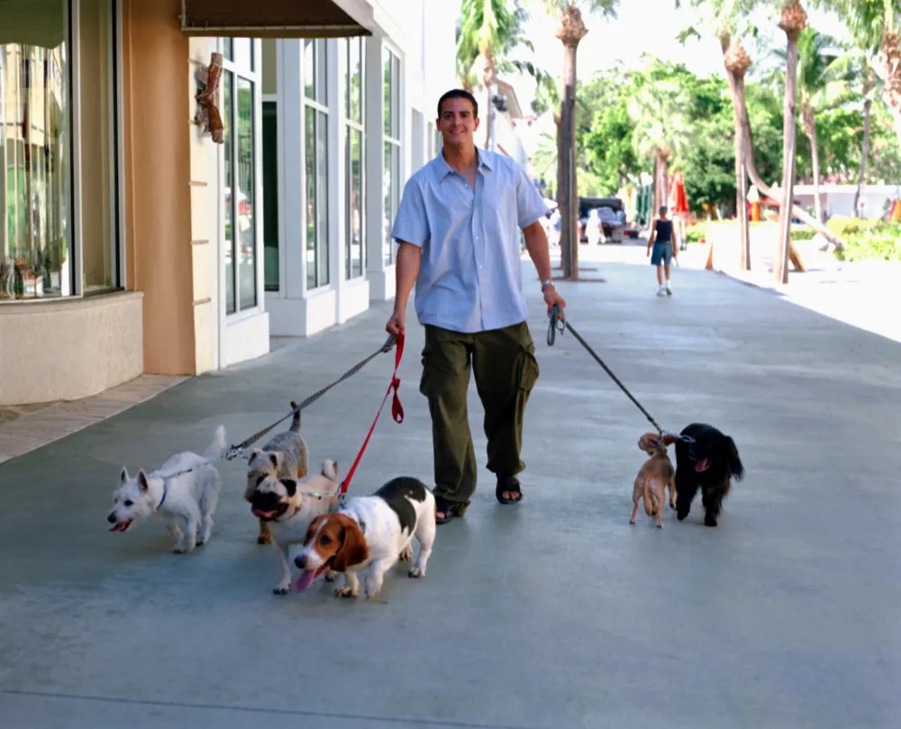
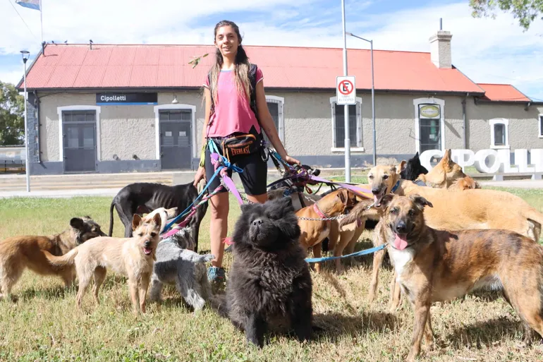

¿Quiénes Somos?
De la mano de un equipo especializado, cuidamos y paseamos a tus mascotas con dedicación y seguridad diaria.
Nuestros Peludos

Rocky
Golden Retriever · 3 años · Enérgico y juguetón.

Luna
Gata Mestiza · 2 años · Regalona y tranquila.
Trabajadores

Carlos Muñoz
Paseador canino certificado con 4 años de experiencia.

Valentina Soto
Cuidadora especialista en primeros auxilios veterinarios.
Agendar Servicio
Para agendar un paseo para tu mascota, ingresa con tu cuenta o regístrate:
Ingresar Usuario Registrarse